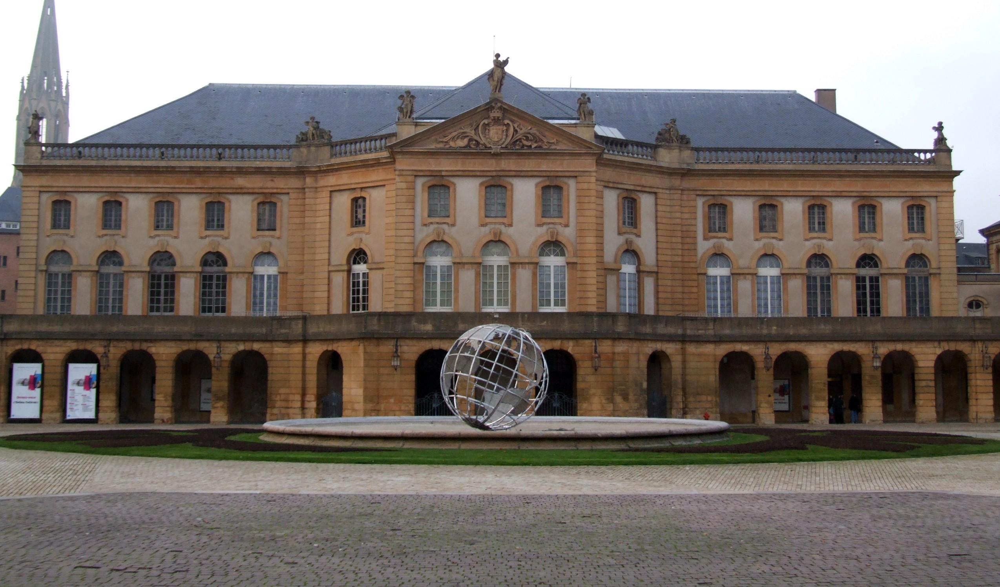

- 상테티엔 대성당
- 텅쁠르 너프
- 오페라
Opera de metz 소개

L’hôtel des Spectacles, futur théâtre, puis opéra-théâtre de Metz, aujourd’hui opéra-théâtre de Metz Métropole,
Metzer Operatheater (en allemand) est l’un des premiers théâtres construits en France et le plus ancien théâtre encore en activité.
Avant sa construction place de la Comédie, la salle de jeu de paume « Chatin », à côté de l’hôtel Gargan en Nexirue, servait de salle de théâtre.
공연 공공건축물, 미래의 극장, 메스 오페라 극장, 오늘날 메스 연합시? 오페라극장
독일어로 메첼 오페라테아터는 프랑스의 첫번째 극장이 그리고 제일 오래된 활동중인 극장이다.
이 건축물이 지어지기 전에 네시휘의 가흐겅 호텔 근처에 폼게임(테니스전신)방인 샤탕홀이 극장으로 사용되었다.